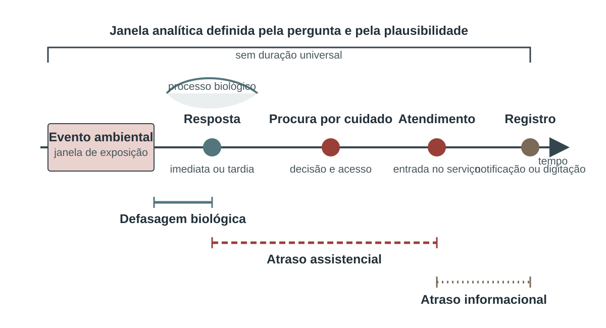

14 Efeitos do clima e do ambiente sobre a saúde
Este capítulo trata dos desfechos e da ligação analítica entre exposição e saúde. Os perigos foram definidos nos capítulos temáticos; as condições de exposição e vulnerabilidade, no Capítulo 13. Uma temperatura extrema, uma concentração de poluente ou uma inundação não constitui, por si, efeito em saúde. De modo inverso, uma internação respiratória ocorrida durante um episódio de fumaça não pode ser automaticamente atribuída a ele.
Na figura, DALY designa o ano de vida ajustado por incapacidade (disability-adjusted life year), medida que reúne perdas fatais e não fatais.
%%{init: {"htmlLabels": false, "flowchart": {"htmlLabels": false}}}%%
flowchart TD
P["Perigo ambiental<br/>intensidade e duração"] --> X["Exposição<br/>lugar, tempo e população"]
X --> M["Mecanismos<br/>fisiológicos e sociais"]
V["Vulnerabilidade<br/>suscetibilidade e proteção"] --> M
M --> D["Desfechos<br/>sintomas, atendimento,<br/>internação, incapacidade, óbito"]
D --> O["Indicadores observados<br/>contagem e taxa"]
D --> E["Comparação temporal<br/>excesso"]
X --> A["Modelo exposição–resposta"]
D --> A
A --> B["Carga atribuível<br/>eventos, fração e DALY"]
14.1 O que cada medida responde
Contagens informam volume assistencial ou número de eventos. Taxas relacionam eventos à população sob risco. Taxas padronizadas reduzem o efeito de estruturas etárias diferentes. Excesso compara o observado com uma referência temporal estimada. Associação quantifica a variação relativa de um desfecho conforme a exposição, sob um modelo. Fração e número atribuíveis estimam a carga que não ocorreria em um cenário contrafactual, desde que a interpretação causal e as demais hipóteses sejam defensáveis (Ahmad et al., 2001; Hernán; Robins, 2020; Organização Pan-Americana da Saúde, 2026).
| Medida | Pergunta principal | Denominador ou referência | Interpretação permitida |
|---|---|---|---|
| Contagem | Quantos eventos ocorreram? | Não há | Volume observado |
| Taxa bruta | Com que frequência ocorreu na população? | População do território e período | Intensidade na população observada |
| Taxa padronizada | Como comparar populações com idades diferentes? | População padrão | Comparação ajustada, não risco observado diretamente |
| Excesso absoluto | Quantos eventos ocorreram além do esperado? | Série contrafactual esperada | Diferença temporal |
| Excesso relativo ou P-score | Qual foi a diferença proporcional em relação ao esperado? | Eventos esperados | Comparação relativa no tempo |
| Associação | Como o desfecho varia com a exposição? | Categoria ou valor de referência no modelo | Relação condicionada ao desenho e aos ajustes |
| Número ou fração atribuível | Quanto seria evitado no contrafactual? | Eventos observados e curva de risco | Carga atribuível sob hipóteses causais |
| DALY atribuível | Quantos anos de vida saudável foram perdidos? | Carga total e fração atribuível | Carga fatal e não fatal comparável |
Uma análise pode apresentar várias dessas medidas, mas deve conservar seus nomes. “Aumento de 20%” pode significar taxa 20% maior, risco relativo de 1,20 ou P-score de 20%; os números não são intercambiáveis. Também é necessário informar se o resultado é observado, estimado ou modelado.
14.2 Mortalidade
O Sistema de Informações sobre Mortalidade permite analisar causa básica, causas associadas, residência, ocorrência, data e características da pessoa. Para indicadores populacionais, a residência costuma definir o território do numerador e do denominador. O local de ocorrência responde a outra pergunta, importante para organizar serviços, mas inadequada para estimar o risco da população residente quando hospitais recebem pacientes de outros municípios (Brasil. Ministério da Saúde, 2026a; Organização Pan-Americana da Saúde, 2026).
A causa básica inicia a cadeia que levou ao óbito. Causas associadas registram condições contribuintes. Códigos diretamente ambientais — exposição ao calor natural excessivo, efeitos da fumaça ou circunstâncias de um desastre — identificam parte dos eventos, porém não medem todo o efeito. Calor pode precipitar infarto, acidente vascular cerebral ou descompensação renal sem aparecer como causa básica. Poluição do ar pode agravar doença respiratória ou cardiovascular sem constar na declaração. Por isso, códigos diretos, taxas por causas selecionadas, excesso de mortalidade e modelos atribuíveis têm funções complementares (Cissé et al., 2022; World Health Organization, 2024).
14.2.1 Taxa bruta e taxa padronizada
A taxa de mortalidade específica por causa descreve óbitos de residentes por população residente. Ela é adequada para acompanhar a mesma população e dimensionar o problema. Comparações entre lugares ou grupos com estruturas etárias distintas exigem taxas específicas por idade ou padronização. Uma população mais envelhecida pode ter taxa bruta maior mesmo que cada faixa etária tenha risco igual ou menor.
Na padronização direta, as taxas específicas por idade de cada população são aplicadas aos mesmos pesos de uma população padrão (Ahmad et al., 2001). O resultado é uma construção comparativa: não representa a taxa que foi literalmente observada. Devem ser publicados a população padrão, as faixas etárias, a cobertura, a regra para idades desconhecidas e intervalos de incerteza. Mudar o padrão ou os grupos etários rompe a comparabilidade.
14.3 Ficha do indicador: Taxa de mortalidade específica por causa
Código: EFE-MOR-01
Título resumido: Mortalidade específica por causa
Tema: Efeitos do clima e do ambiente sobre a saúde
Dimensão: efeito
Disponibilidade: dados secundários de saúde requer qualificação
Identificação e fundamento
Base de consolidação. Indicador de mortalidade específica por causas da RIPSA, calculado com óbitos de residentes e população residente.
Objetivo
Medir a intensidade da mortalidade por causa ou grupo de causas em uma população.
Interpretação
Valor de 25 por 100 mil significa 25 óbitos registrados pela causa para cada 100 mil residentes no período. A taxa bruta reflete risco e estrutura etária; não deve ser usada isoladamente para comparar populações com idades distintas.
Usos
- Descrever mortalidade por causas sensíveis ao clima e ambiente.
- Comparar períodos dentro de população estável.
- Monitorar desigualdades com estratificação.
- Compor análises epidemiológicas de eventos.
Limitações
- Depende da qualidade da causa básica e da cobertura do SIM.
- Códigos diretos de calor ou desastre podem subestimar efeitos indiretos.
- Pequenas populações produzem taxas instáveis.
- Comparações territoriais exigem padronização por idade quando as estruturas diferem.
Fontes de dados
Método de cálculo
Definir previamente códigos da CID-10, idade, território de residência e período. Contar óbitos de residentes com causa básica no conjunto e dividir pela população residente estimada no meio do período; multiplicar por 100 mil. Calcular intervalos e, em pequenas áreas, considerar agregação ou suavização claramente identificada.
\[ TM_c=100\,000\times\frac{D_{c,res}}{Pop_{res}} \]
Numerador. Óbitos de residentes cuja causa básica pertence ao conjunto c no período.
Denominador. População residente no território e período.
Unidade de medida. Óbitos por 100 mil habitantes.
Variáveis e categorias de análise. Causa básica CID-10; idade; sexo; raça ou cor; escolaridade; ocupação; residência; ocorrência; período; circunstância quando disponível.
Granularidade. Óbito individual na origem e taxa agregada.
Periodicidade de atualização. Conforme bases preliminares e consolidadas do SIM.
Responsabilidade gerencial. Área de vigilância epidemiológica e informação em saúde, com apoio de epidemiologia e estatística para modelagem e interpretação.
Notas. Contagens, taxas, excesso, associação e atribuição respondem a perguntas diferentes. Resultados estimados devem informar modelo, referência contrafactual e incerteza.
Análise descritiva do indicador. Mostrar contagem e taxa, distribuição etária, sexo, raça ou cor, local, sazonalidade, causas mal definidas, cobertura e intervalo; usar padronização para comparações.
Campos complementares para clima, ambiente e saúde
Unidade territorial. Município de residência e agregações superiores; pequenas áreas sob regras de confidencialidade e estabilidade.
Resolução espacial original. Município de residência nos dados públicos usuais.
Resolução temporal. Data do óbito; resumo diário, semanal, mensal ou anual conforme contagem.
Período de referência. Período analisado e versão da CID; no Brasil, série CID-10 desde 1996.
Limiar ou valor de referência. Não há limiar universal; comparar com série histórica, território adequado e intervalo de incerteza.
Disponibilidade e acesso
Cobertura geográfica. Brasil, condicionada à cobertura e qualidade local do SIM.
Período disponível. Desde 1996 em CID-10 no portal nacional consultado.
Periodicidade de atualização. Conforme bases preliminares e consolidadas do SIM.
Forma de acesso. TABNET e transferência de arquivos do DATASUS.
URL ou identificador persistente. https://datasus.saude.gov.br/mortalidade-desde-1996-pela-cid-10
Formato dos arquivos. DBC, DBF após conversão e tabelas exportadas.
Necessidade de processamento. Selecionar causas, deduplicar se necessário, qualificar residência e data, vincular população e estimar estabilidade.
Qualidade, comparação e saúde
Qualidade e incerteza. Avaliar cobertura, completude, oportunidade, duplicidade, definição de caso, codificação CID, causa básica e associadas, revisões, estabilidade do denominador, pequenas contagens e intervalos de incerteza.
Possibilidade de comparação. Manter desfecho, definição, códigos, população, fonte, território, calendário, padronização e versão; mudanças assistenciais e de registro podem alterar o indicador sem mudança igual na ocorrência.
Relação com desfechos de saúde. Mede ocorrência observada ou carga estimada de desfechos; a relação com clima ou ambiente exige exposição definida e desenho analítico compatível.
Defasagens temporais relevantes. Registrar data do evento de saúde e considerar o intervalo biologicamente plausível entre exposição e desfecho; data de processamento ou competência não deve substituir automaticamente a data clínica.
Aplicação na gestão. Monitorar impacto, desigualdades e pressão sobre serviços, avaliar alertas e intervenções e apoiar priorização, sem atribuir causalidade além do desenho.
Referências metodológicas
14.4 Ficha do indicador: Taxa de mortalidade específica por causa padronizada por idade pelo método direto
Código: EFE-MOR-02
Título resumido: Mortalidade padronizada por idade
Tema: Efeitos do clima e do ambiente sobre a saúde
Dimensão: efeito
Disponibilidade: dados secundários de saúde requer qualificação
Identificação e fundamento
Base de consolidação. Padronização direta com população padrão da Organização Mundial da Saúde.
Objetivo
Comparar mortalidade por causa entre populações ou períodos removendo a influência de diferenças na composição etária.
Interpretação
A taxa representa quantos óbitos por 100 mil ocorreriam na população padrão se ela experimentasse as taxas etárias observadas. É uma medida comparativa hipotética, não a taxa efetivamente observada.
Usos
- Comparar territórios com estruturas etárias diferentes.
- Monitorar tendências longas.
- Comparar grupos populacionais.
- Produzir indicadores internacionais de mortalidade ambiental.
Limitações
- O resultado depende da população padrão e das faixas etárias.
- Exige números e denominadores por idade confiáveis.
- Taxas etárias instáveis contaminam a soma.
- Não substitui a apresentação de contagens e taxas específicas por idade.
Fontes de dados
Método de cálculo
Para cada faixa etária, dividir óbitos pela população correspondente. Multiplicar cada taxa específica pela proporção da mesma faixa na população padrão. Somar os produtos e multiplicar pela constante quando as taxas não estiverem previamente escaladas. Declarar padrão, faixas, tratamento da idade ignorada e intervalo.
\[ TMP_c=100\,000\times\sum_a\left(\frac{D_{c,a}}{Pop_a}\right)w_a,\qquad \sum_a w_a=1 \]
Numerador. Soma ponderada das taxas específicas por idade; não há numerador observado único.
Denominador. Populações específicas por idade; pesos da população padrão somam um.
Unidade de medida. Óbitos por 100 mil habitantes da população padrão.
Variáveis e categorias de análise. Causa; idade; sexo; raça ou cor quando denominadores permitirem; território; ano; população padrão.
Granularidade. Faixa etária antes da padronização; território-período na saída.
Periodicidade de atualização. Anual ou por edição da base.
Responsabilidade gerencial. Área de vigilância epidemiológica e informação em saúde, com apoio de epidemiologia e estatística para modelagem e interpretação.
Notas. Contagens, taxas, excesso, associação e atribuição respondem a perguntas diferentes. Resultados estimados devem informar modelo, referência contrafactual e incerteza.
Análise descritiva do indicador. Apresentar taxa bruta, padronizada e específicas por idade, contagens, padrão empregado e intervalos; investigar se a diferença comparativa é concentrada em alguma idade.
Campos complementares para clima, ambiente e saúde
Unidade territorial. Território com óbitos e população por idade compatíveis.
Resolução espacial original. A menor unidade com contagens etárias estáveis e denominadores qualificados.
Resolução temporal. Geralmente anual ou plurianual.
Período de referência. Período dos óbitos e população; população padrão OMS 2000–2025 quando adotada.
Limiar ou valor de referência. Não há corte universal; comparações exigem a mesma população padrão.
Disponibilidade e acesso
Cobertura geográfica. Brasil com SIM e IBGE; global nas estimativas comparáveis da OMS.
Período disponível. Conforme séries de mortalidade e população por idade.
Periodicidade de atualização. Anual ou por edição da base.
Forma de acesso. Cálculo com tabelas etárias; estimativas internacionais no Observatório Global de Saúde.
URL ou identificador persistente. https://cdn.who.int/media/docs/default-source/gho-documents/global-health-estimates/gpe_discussion_paper_series_paper31_2001_age_standardization_rates.pdf
Formato dos arquivos. Tabelas por idade e arquivo de pesos padrão.
Necessidade de processamento. Harmonizar faixas, calcular taxas específicas, aplicar pesos, estimar variância e documentar padrão.
Qualidade, comparação e saúde
Qualidade e incerteza. Avaliar cobertura, completude, oportunidade, duplicidade, definição de caso, codificação CID, causa básica e associadas, revisões, estabilidade do denominador, pequenas contagens e intervalos de incerteza.
Possibilidade de comparação. Manter desfecho, definição, códigos, população, fonte, território, calendário, padronização e versão; mudanças assistenciais e de registro podem alterar o indicador sem mudança igual na ocorrência.
Relação com desfechos de saúde. Mede ocorrência observada ou carga estimada de desfechos; a relação com clima ou ambiente exige exposição definida e desenho analítico compatível.
Defasagens temporais relevantes. Registrar data do evento de saúde e considerar o intervalo biologicamente plausível entre exposição e desfecho; data de processamento ou competência não deve substituir automaticamente a data clínica.
Aplicação na gestão. Monitorar impacto, desigualdades e pressão sobre serviços, avaliar alertas e intervenções e apoiar priorização, sem atribuir causalidade além do desenho.
Referências metodológicas
14.5 Morbidade e utilização dos serviços
Morbidade inclui doença percebida, diagnosticada ou registrada. Inquéritos domiciliares captam sintomas e limitações que não chegam aos serviços; atenção primária registra problemas e acompanhamento; urgência responde a quadros agudos; internações representam uma parcela mais grave e selecionada. Nenhuma base isolada mede todos os adoecimentos (Organização Pan-Americana da Saúde, 2026; World Health Organization, 2023a).
O SIH/SUS (Sistema de Informações Hospitalares do Sistema Único de Saúde) é uma fonte consolidada para internações financiadas pelo Sistema Único de Saúde (SUS). A unidade registrada é a autorização de internação hospitalar, e não necessariamente uma pessoa única. Transferências, reinternações, regras de pagamento, oferta de leitos e mudanças de codificação influenciam as séries (Brasil. Ministério da Saúde, 2026b; Organização Pan-Americana da Saúde, 2026). A taxa de internação por causas selecionadas é útil para vigilância e planejamento, desde que seja chamada de taxa de internação no SUS, e não de incidência da doença na população.
Atendimentos ambulatoriais ou de urgência podem reagir mais rapidamente a calor, fumaça, alergias, acidentes e sofrimento psíquico, mas a organização local dos sistemas frequentemente dificulta séries nacionais comparáveis. Quando utilizados, devem documentar unidade de registro, duplicidades, cobertura pública e privada, mudança de prontuário e interrupções operacionais. Um desastre pode reduzir atendimentos registrados porque unidades ficaram inacessíveis; queda na produção não significa melhora da saúde (World Health Organization, 2022, 2023a).
14.6 Ficha do indicador: Taxa de internação hospitalar do SUS por causas selecionadas
Código: EFE-MOB-01
Título resumido: Internações SUS por causa — D.29
Tema: Efeitos do clima e do ambiente sobre a saúde
Dimensão: efeito
Disponibilidade: dados secundários de saúde requer qualificação
Identificação e fundamento
Base de consolidação. Indicador D.29 da RIPSA para internações hospitalares financiadas pelo SUS por causas selecionadas.
Objetivo
Medir a frequência de utilização hospitalar do SUS associada a causas selecionadas em relação à população.
Interpretação
Valor de 12 por 10 mil representa 12 AIH de internação pela causa para cada 10 mil residentes. Mede episódios administrativos de internação, não pessoas únicas nem incidência integral da doença.
Usos
- Monitorar pressão hospitalar durante calor
- Fumaça
- Enchentes ou surtos.
- Comparar sazonalidade e períodos.
- Estratificar por idade e território.
- Planejar capacidade assistencial.
Limitações
- Cobre internações financiadas pelo SUS
- Não toda assistência hospitalar.
- Uma pessoa pode gerar mais de uma AIH ou internação.
- Oferta
- Acesso e regras de faturamento modificam a taxa.
- Diagnóstico principal pode não registrar a exposição ambiental.
Fontes de dados
Método de cálculo
Definir códigos CID-10, população, território de residência e período. Contar AIH de residentes com diagnóstico principal no conjunto selecionado, observando longa permanência e duplicidades previstas no método. Dividir pela população residente e multiplicar por 10 mil. Para efeitos agudos, usar data de internação quando disponível e não apenas competência.
\[ TI_c=10\,000\times\frac{AIH_{c,res}}{Pop_{res}} \]
Numerador. Internações ou AIH de residentes financiadas pelo SUS pela causa selecionada.
Denominador. População residente no território e período.
Unidade de medida. Internações por 10 mil habitantes.
Variáveis e categorias de análise. Diagnóstico principal e secundário; idade; sexo; raça ou cor; residência; estabelecimento; data; permanência; desfecho.
Granularidade. AIH na origem e taxa territorial no resultado.
Periodicidade de atualização. Mensal, sujeita a revisões administrativas.
Responsabilidade gerencial. Área de vigilância epidemiológica e informação em saúde, com apoio de epidemiologia e estatística para modelagem e interpretação.
Notas. Contagens, taxas, excesso, associação e atribuição respondem a perguntas diferentes. Resultados estimados devem informar modelo, referência contrafactual e incerteza.
Análise descritiva do indicador. Mostrar contagens e taxas, permanência, óbito hospitalar, idade, raça ou cor, residência e local de atendimento, sazonalidade, cobertura SUS e mudanças de oferta.
Campos complementares para clima, ambiente e saúde
Unidade territorial. Município de residência e agregações, com opção de analisar fluxo por local de internação separadamente.
Resolução espacial original. Município de residência e estabelecimento conforme arquivo público.
Resolução temporal. Episódio ou competência mensal; resumo diário quando datas forem qualificadas.
Período de referência. Período analisado e versão do processamento SIH/SUS.
Limiar ou valor de referência. Não há corte universal; usar série histórica e capacidade local.
Disponibilidade e acesso
Cobertura geográfica. Brasil para internações financiadas pelo SUS.
Período disponível. Conforme o SIH/SUS; considerar mudanças da CID e do processamento.
Periodicidade de atualização. Mensal, sujeita a revisões administrativas.
Forma de acesso. TABNET, TABWIN e transferência de arquivos.
URL ou identificador persistente. https://datasus.saude.gov.br/acesso-a-informacao/morbidade-hospitalar-do-sus-sih-sus/
Formato dos arquivos. DBC, DBF após conversão e tabelas exportadas.
Necessidade de processamento. Selecionar diagnósticos, data e residência, tratar AIH de continuidade, vincular denominador e verificar cobertura.
Qualidade, comparação e saúde
Qualidade e incerteza. Avaliar cobertura, completude, oportunidade, duplicidade, definição de caso, codificação CID, causa básica e associadas, revisões, estabilidade do denominador, pequenas contagens e intervalos de incerteza.
Possibilidade de comparação. Manter desfecho, definição, códigos, população, fonte, território, calendário, padronização e versão; mudanças assistenciais e de registro podem alterar o indicador sem mudança igual na ocorrência.
Relação com desfechos de saúde. Mede ocorrência observada ou carga estimada de desfechos; a relação com clima ou ambiente exige exposição definida e desenho analítico compatível.
Defasagens temporais relevantes. Registrar data do evento de saúde e considerar o intervalo biologicamente plausível entre exposição e desfecho; data de processamento ou competência não deve substituir automaticamente a data clínica.
Aplicação na gestão. Monitorar impacto, desigualdades e pressão sobre serviços, avaliar alertas e intervenções e apoiar priorização, sem atribuir causalidade além do desenho.
Referências metodológicas
14.7 Famílias de desfechos e especificação epidemiológica
A definição do desfecho deve preceder a extração. Não é suficiente solicitar “doenças relacionadas ao clima”. O protocolo precisa declarar códigos, posição diagnóstica, faixa etária, fonte, território, período e mecanismo plausível.
Temperatura, fumaça e poluentes atmosféricos podem desencadear ou agravar desfechos respiratórios e cardiovasculares. As análises frequentemente examinam mortalidade ou internações por todas as causas naturais, doenças do aparelho respiratório, asma, doença pulmonar obstrutiva crônica, pneumonia, doenças cardiovasculares, doença isquêmica e acidente vascular cerebral. A composição exata deve ser publicada e mantida ao longo da série (Cissé et al., 2022; World Health Organization, 2021).
Desfechos amplos oferecem maior número de eventos e menor sensibilidade a erros entre diagnósticos próximos. Desfechos específicos aproximam mecanismos clínicos, mas podem ser instáveis e mais dependentes da qualidade diagnóstica. Resultados para “todas as causas” não autorizam afirmar qual doença respondeu pela associação.
Temperatura, chuva, umidade, armazenamento de água, saneamento, mobilidade, imunidade, circulação do agente e controle vetorial participam da transmissão. O efeito não é instantâneo: desenvolvimento do vetor, incubação extrínseca e intrínseca, procura por cuidado, diagnóstico e notificação produzem defasagens. Casos prováveis, confirmados, data de início dos sintomas e data de notificação não são equivalentes.
Uma associação entre chuva e dengue pode mudar de sinal conforme a defasagem e o contexto. Chuva pode formar criadouros; precipitação extrema pode removê-los; seca pode estimular armazenamento doméstico de água. Modelos precisam representar relações não lineares e mecanismos locais. A variável climática não substitui indicadores de vigilância entomológica nem a confirmação epidemiológica (Cissé et al., 2022).
Diarreias, hepatite A, leptospirose e outras doenças podem se relacionar a contaminação, inundação, interrupção de abastecimento, contato com água contaminada e falhas de esgotamento. Os indicadores de água e saneamento do Capítulo 10 medem condições de exposição ou proteção, não casos de doença.
Para leptospirose após inundação, por exemplo, devem ser alinhadas a data e a área do evento, a provável exposição, o início dos sintomas, a residência e o local provável de infecção. Para doenças diarreicas, a interpretação deve considerar idade, sazonalidade, circulação de patógenos, qualidade da vigilância e acesso aos serviços. A ausência de confirmação laboratorial pode justificar uma definição sindrômica, desde que isso seja explicitado (Levy et al., 2016; World Health Organization, 2023a).
Tempestades, ventos, raios, movimentos de massa, inundações, incêndios e calor podem causar lesões e mortes diretamente. Causas externas exigem examinar natureza da lesão e circunstância. O local de ocorrência ganha importância operacional, enquanto a residência permanece relevante para estimar risco e organizar continuidade do cuidado.
Registros de desastre e registros de saúde não devem ser somados sem vinculação. Uma pessoa ferida pode aparecer no atendimento, na internação e no cadastro de afetados. Cada sistema possui unidade de observação própria. A reconciliação deve usar identificadores protegidos ou regras probabilísticas documentadas, mantendo versões e estimando duplicidade (World Health Organization, 2022, 2023a).
Eventos extremos podem produzir sofrimento agudo, ansiedade, depressão, transtorno de estresse pós-traumático, uso problemático de substâncias, violência, luto e agravamento de condições anteriores. Deslocamento, perda de moradia e renda, ruptura de redes e incerteza prolongam efeitos muito além do dia do evento (Cissé et al., 2022; World Health Organization, 2022).
Internações psiquiátricas e mortalidade por suicídio captam apenas extremos de uma distribuição ampla. Inquéritos com instrumentos validados, atendimentos de atenção psicossocial, uso de serviços e acompanhamento longitudinal acrescentam dimensões, mas dependem do acesso. Uma elevação na procura pode refletir piora, redução de estigma ou ampliação da oferta. O indicador deve ser interpretado com a organização da rede e nunca usado para estigmatizar comunidades atingidas.
Exposições térmicas, poluição, fumaça, contaminação da água, insegurança alimentar e interrupção do cuidado podem alcançar gestação, parto e infância. Desfechos incluem parto prematuro, baixo peso ao nascer, natimortalidade, mortalidade neonatal e adoecimento infantil. A janela de exposição deve corresponder ao mecanismo: trimestre gestacional, semanas anteriores ao parto ou primeiros meses de vida (Cissé et al., 2022).
Idade gestacional e data provável da concepção têm incerteza. Endereço no parto pode não representar residência durante toda a gestação. Comparações precisam ajustar tendências temporais, sazonalidade, idade materna, paridade e determinantes sociais definidos previamente. Associações ecológicas em municípios não devem ser convertidas em risco individual.
A especificação do desfecho deve ser escrita antes da extração e permanecer versionada. Ela inclui evento, unidade de registro, critérios de inclusão e exclusão, posição diagnóstica, território, data de referência, faixa etária, fonte e tratamento de duplicidades. Alterar códigos ou filtros depois de observar os resultados cria uma nova análise e precisa ser identificado como tal (Organização Pan-Americana da Saúde, 2026; World Health Organization, 2023a).
Caso clínico, atendimento, internação e pessoa não são equivalentes. Uma pessoa pode gerar vários contatos; uma internação pode envolver transferência; um caso provável pode depois ser descartado; um óbito possui causa básica e condições associadas. A contagem depende do estágio e da unidade escolhidos. Para planejamento assistencial, eventos podem ser adequados; para risco populacional, pessoas e denominadores coerentes são necessários.
A fonte seleciona quem pode aparecer. Mortalidade depende de cobertura e codificação; internação no SUS depende de acesso, oferta e regras administrativas; urgência depende da organização local; inquérito depende de amostragem e resposta; vigilância de doença depende de definição, diagnóstico e notificação. Tendências de utilização podem refletir mudança de doença, acesso, capacidade ou registro. O processo gerador dos dados precisa integrar a interpretação (Brasil. Ministério da Saúde, 2026a, 2026b; World Health Organization, 2023a).
Desfechos amplos e específicos produzem compromissos distintos. Categorias amplas elevam estabilidade e reduzem sensibilidade a mudanças entre diagnósticos próximos, mas dificultam atribuir mecanismo. Categorias específicas aproximam a hipótese clínica, porém podem ter menor número e maior dependência da qualidade diagnóstica. Publicar ambos pode ser útil quando as famílias foram definidas previamente e a multiplicidade é tratada.
Para doenças vetoriais e hídricas, a data de início dos sintomas costuma aproximar melhor a história biológica que a notificação, mas pode estar ausente ou sujeita a memória. Para lesões, local de ocorrência e circunstância ganham importância. Para saúde materna, a janela gestacional exige estimar concepção e residência ao longo do período. Para saúde mental, registros de serviço captam apenas parte da experiência e dependem fortemente de acesso. Não existe um campo temporal ou territorial universal para todos os desfechos (Cissé et al., 2022; Levy et al., 2016).
Vigilância e inferência causal também têm exigências diferentes. Vigilância pode aceitar dados preliminares para detectar sinal e organizar cuidado, desde que revisão e falsos sinais sejam previstos. Inferência causal exige contraste bem definido, temporalidade, controle de confundimento, avaliação de seleção e erro de mensuração. Um painel pode mostrar associação exploratória sem autorizar atribuição. A linguagem publicada deve acompanhar o desenho (Hernán; Robins, 2020).
A qualidade da exposição e do desfecho deve ser examinada conjuntamente. Classificação incorreta pode variar por território ou grupo; falha de energia pode interromper simultaneamente monitor ambiental e atendimento; mobilidade pode deslocar a exposição em relação à residência; mudança de serviço pode alterar registro durante o período. Esses mecanismos podem produzir viés que intervalos estatísticos usuais não capturam.
Antes da publicação, uma tabela de rastreabilidade deve ligar cada resultado à definição, código, fonte, extração, transformação, modelo e versão. Essa documentação permite reproduzir o número, atualizar a série e distinguir mudança real de revisão metodológica (United Nations General Assembly, 2014; World Wide Web Consortium, 2013).
14.8 Tempo, referência e inferência
14.8.1 Defasagens
Uma exposição pode ter efeito no mesmo dia ou semanas depois. Calor costuma produzir respostas agudas e deslocamento temporal de eventos; frio pode ter defasagem mais longa. Fumaça pode afetar sintomas rapidamente, enquanto vetores e doenças hídricas envolvem ciclos biológicos e atrasos de notificação. Escolher apenas o dia do evento tende a perder carga ou atribuí-la ao período errado (Gasparrini; Armstrong; Kenward, 2010).
Modelos não lineares de defasagem distribuída representam simultaneamente a forma da relação exposição–resposta e sua distribuição no tempo (Gasparrini; Armstrong; Kenward, 2010). A janela máxima não deve ser escolhida pelo resultado mais significativo. Ela precisa de justificativa biológica, inspeção de sensibilidade e comprimento suficiente para distinguir efeito acumulado e antecipação de eventos.
A linha do tempo da Figura 14.2 separa a latência biológica do atraso assistencial e do atraso de registro, distinção necessária antes de escolher a janela analítica.

Fonte e autoria: elaboração própria. Licença: a mesma dos textos autorais da obra.
14.8.2 Sazonalidade, tendência e calendário
Exposição e desfecho podem subir na mesma estação sem relação causal direta. Tendência de longo prazo, dia da semana, feriados, epidemias, poluentes correlacionados e mudanças de população ou serviço podem confundir a associação. Séries temporais precisam controlar esses padrões sem remover o sinal de interesse (Gasparrini; Armstrong; Kenward, 2010; Hernán; Robins, 2020).
Autocorrelação e sobredispersão afetam incerteza. Interrupções, atrasos de digitação e mudança de definição criam quebras. A análise deve apresentar diagnóstico dos resíduos, especificação dos termos temporais, controle de calendário, dados ausentes e testes de sensibilidade. Explorar muitas causas, defasagens e limiares e publicar apenas associações positivas produz evidência frágil.
14.8.3 Excesso de eventos
Excesso é a diferença entre observado e esperado na ausência do período excepcional. O esperado pode vir de anos anteriores comparáveis ou de um modelo com tendência, sazonalidade, calendário e mudanças populacionais. A referência deve ser estimada antes de interpretar o sinal; uma média simples de poucos anos pode ser inadequada (World Health Organization, 2023b).
O número absoluto dimensiona o evento para resposta. O P-score divide o excesso pelo esperado e favorece comparação relativa. Um município pequeno pode ter P-score alto com poucos óbitos, enquanto uma metrópole tem P-score menor e excesso absoluto muito maior. Ambos devem vir acompanhados do observado, esperado, intervalo e qualidade do registro (World Health Organization, 2023b).
Excesso não identifica a exposição responsável. Durante uma onda de calor com fumaça, interrupção elétrica e epidemia, ele resume o desvio conjunto. Para atribuição a um fator específico são necessários desenho, exposições e controle dos fatores concorrentes.
14.9 Ficha do indicador: Número de óbitos em excesso
Código: EFE-EXC-01
Título resumido: Óbitos em excesso
Tema: Efeitos do clima e do ambiente sobre a saúde
Dimensão: efeito
Disponibilidade: dados secundários de saúde requer qualificação
Identificação e fundamento
Base de consolidação. Definição epidemiológica e métodos de mortalidade em excesso da Organização Mundial da Saúde.
Objetivo
Detectar e quantificar mortalidade acima ou abaixo do padrão esperado por todas as causas ou causas definidas.
Interpretação
Excesso positivo indica mais óbitos que o esperado; valor negativo indica déficit. O total inclui efeitos diretos e indiretos e não identifica sozinho qual parcela foi causada pelo evento.
Usos
- Monitorar ondas de calor
- Desastres e emergências.
- Captar efeitos não registrados em códigos específicos.
- Comparar impacto temporal.
- Avaliar pressão e interrupção do sistema.
Limitações
- O resultado depende criticamente do modelo esperado.
- Tendência
- Sazonalidade
- Envelhecimento e feriados devem ser tratados.
- Atraso de registro pode criar excesso ou déficit artificial.
- Excesso temporal não prova atribuição causal ao perigo.
Fontes de dados
Método de cálculo
Modelar óbitos esperados com período anterior não afetado, controlando tendência, sazonalidade e calendário e incorporando estrutura demográfica quando necessário. Prever cada unidade temporal com intervalo. Subtrair o esperado do observado e somar no período. Informar resultados usando tanto a média esperada quanto, quando pertinente, o limite superior preditivo.
\[ Excesso_t=O_t-E_t;\qquad Excesso_P=\sum_{t\in P}(O_t-E_t) \]
Numerador. Não se aplica; diferença entre contagem observada e esperada.
Denominador. Não se aplica; pode-se dividir pela população para obter taxa de excesso.
Unidade de medida. Óbitos; adicionalmente óbitos por população.
Variáveis e categorias de análise. Óbitos por todas as causas ou causa; data; idade; sexo; raça ou cor; território; observado; esperado; intervalo preditivo.
Granularidade. Dia ou semana antes da agregação; território-período no resumo.
Periodicidade de atualização. Semanal ou mensal em monitoramento com dados preliminares; revisão após consolidação.
Responsabilidade gerencial. Área de vigilância epidemiológica e informação em saúde, com apoio de epidemiologia e estatística para modelagem e interpretação.
Notas. Contagens, taxas, excesso, associação e atribuição respondem a perguntas diferentes. Resultados estimados devem informar modelo, referência contrafactual e incerteza.
Análise descritiva do indicador. Plotar observado e esperado com intervalo, excesso diário e acumulado, estratos e revisões; testar baselines alternativos e mortalidade deslocada.
Campos complementares para clima, ambiente e saúde
Unidade territorial. Território com série suficientemente estável e registro oportuno.
Resolução espacial original. A dos óbitos; modelagem em pequenas áreas requer pooling ou estrutura hierárquica.
Resolução temporal. Diário ou semanal para eventos agudos; mensal para séries menos densas.
Período de referência. Anos anteriores selecionados antes do evento, excluindo períodos anômalos conforme protocolo.
Limiar ou valor de referência. Esperado e intervalo preditivo do modelo; exceder o limite superior é sinal estatístico, não prova causal.
Disponibilidade e acesso
Cobertura geográfica. Brasil conforme o SIM e a oportunidade dos registros.
Período disponível. Conforme a série histórica qualificada.
Periodicidade de atualização. Semanal ou mensal em monitoramento com dados preliminares; revisão após consolidação.
Forma de acesso. Modelagem sobre série de óbitos do SIM e denominadores do IBGE.
URL ou identificador persistente. https://www.who.int/publications/m/item/methods-for-estimating-the-excess-mortality-associatedwith-the-covid-19-pandemic
Formato dos arquivos. Série temporal de contagens, previsões e intervalos.
Necessidade de processamento. Corrigir atraso, definir linha de base, modelar tendência e sazonalidade, prever esperado, calcular diferenças e intervalos.
Qualidade, comparação e saúde
Qualidade e incerteza. Avaliar cobertura, completude, oportunidade, duplicidade, definição de caso, codificação CID, causa básica e associadas, revisões, estabilidade do denominador, pequenas contagens e intervalos de incerteza.
Possibilidade de comparação. Manter desfecho, definição, códigos, população, fonte, território, calendário, padronização e versão; mudanças assistenciais e de registro podem alterar o indicador sem mudança igual na ocorrência.
Relação com desfechos de saúde. Mede ocorrência observada ou carga estimada de desfechos; a relação com clima ou ambiente exige exposição definida e desenho analítico compatível.
Defasagens temporais relevantes. Registrar data do evento de saúde e considerar o intervalo biologicamente plausível entre exposição e desfecho; data de processamento ou competência não deve substituir automaticamente a data clínica.
Aplicação na gestão. Monitorar impacto, desigualdades e pressão sobre serviços, avaliar alertas e intervenções e apoiar priorização, sem atribuir causalidade além do desenho.
Referências metodológicas
14.10 Ficha do indicador: P-score de mortalidade em excesso
Código: EFE-EXC-02
Título resumido: P-score de excesso de mortalidade
Tema: Efeitos do clima e do ambiente sobre a saúde
Dimensão: efeito
Disponibilidade: dados secundários de saúde requer qualificação
Identificação e fundamento
Base de consolidação. Medida percentual usada pela Organização Mundial da Saúde para comparar mortalidade observada e esperada.
Objetivo
Tornar o excesso comparável entre populações e períodos com diferentes níveis basais de mortalidade.
Interpretação
P-score de 20% indica que os óbitos observados ficaram 20% acima do esperado; −10% indica 10% abaixo. Um mesmo percentual pode representar números absolutos muito diferentes.
Usos
- Comparar intensidade relativa de excesso.
- Monitorar estratos etários e sexuais.
- Comunicar desvio proporcional da linha de base.
- Complementar contagem absoluta.
Limitações
- Herda toda incerteza do esperado.
- Pode ser instável quando o esperado é pequeno.
- Percentual alto em pequena população pode corresponder a poucos óbitos.
- Não substitui contagens nem taxa populacional.
Fontes de dados
- Sistema de Informações sobre Mortalidade — óbitos observados e série histórica para o esperado (cadastro)
Método de cálculo
Obter observado e esperado com o mesmo método da ficha de óbitos em excesso. Subtrair o esperado do observado, dividir pelo esperado e multiplicar por 100. Calcular por unidade temporal ou sobre somas do período; não fazer média simples de P-scores diários com esperados diferentes.
\[ Pscore_P=100\times\frac{\sum_{t\in P}O_t-\sum_{t\in P}E_t}{\sum_{t\in P}E_t} \]
Numerador. Óbitos observados menos óbitos esperados no período.
Denominador. Óbitos esperados no período.
Unidade de medida. Percentual (%).
Variáveis e categorias de análise. Observado; esperado; idade; sexo; raça ou cor; causa; território; período.
Granularidade. Dia ou semana na origem; período agregado no P-score.
Periodicidade de atualização. A mesma da estimativa de excesso.
Responsabilidade gerencial. Área de vigilância epidemiológica e informação em saúde, com apoio de epidemiologia e estatística para modelagem e interpretação.
Notas. Contagens, taxas, excesso, associação e atribuição respondem a perguntas diferentes. Resultados estimados devem informar modelo, referência contrafactual e incerteza.
Análise descritiva do indicador. Apresentar P-score com excesso absoluto, esperado, intervalo e tamanho populacional; evitar ordenação sem estabilidade.
Campos complementares para clima, ambiente e saúde
Unidade territorial. Território com esperado suficientemente grande e estável.
Resolução espacial original. A da modelagem de excesso.
Resolução temporal. Diário, semanal, mensal ou por episódio.
Período de referência. A mesma linha de base do modelo de esperado.
Limiar ou valor de referência. Zero indica observado igual ao esperado; intervalos devem ser obtidos da incerteza do modelo.
Disponibilidade e acesso
Cobertura geográfica. A do sistema de mortalidade usado.
Período disponível. Conforme os dados observados e a linha de base.
Periodicidade de atualização. A mesma da estimativa de excesso.
Forma de acesso. Derivação das séries observada e esperada.
URL ou identificador persistente. https://www.who.int/publications/m/item/methods-for-estimating-the-excess-mortality-associatedwith-the-covid-19-pandemic
Formato dos arquivos. Tabela e série temporal com observado, esperado, excesso e P-score.
Necessidade de processamento. Agregar observado e esperado de forma consistente e propagar incerteza.
Qualidade, comparação e saúde
Qualidade e incerteza. Avaliar cobertura, completude, oportunidade, duplicidade, definição de caso, codificação CID, causa básica e associadas, revisões, estabilidade do denominador, pequenas contagens e intervalos de incerteza.
Possibilidade de comparação. Manter desfecho, definição, códigos, população, fonte, território, calendário, padronização e versão; mudanças assistenciais e de registro podem alterar o indicador sem mudança igual na ocorrência.
Relação com desfechos de saúde. Mede ocorrência observada ou carga estimada de desfechos; a relação com clima ou ambiente exige exposição definida e desenho analítico compatível.
Defasagens temporais relevantes. Registrar data do evento de saúde e considerar o intervalo biologicamente plausível entre exposição e desfecho; data de processamento ou competência não deve substituir automaticamente a data clínica.
Aplicação na gestão. Monitorar impacto, desigualdades e pressão sobre serviços, avaliar alertas e intervenções e apoiar priorização, sem atribuir causalidade além do desenho.
Referências metodológicas
14.11 Eventos e carga atribuíveis
Um risco relativo descreve a relação entre exposição e desfecho; não informa sozinho quantos eventos ocorreram por causa da exposição. A carga atribuível combina a curva de risco, a distribuição de exposição, o número de desfechos e um contrafactual (Gasparrini; Leone, 2014; Hernán; Robins, 2020).
Para temperatura, modelos de defasagem distribuída permitem estimar, para cada dia, a contribuição acumulada das exposições atuais e anteriores. Os números atribuíveis podem ser somados e divididos pelo total para obter a fração atribuível (Gasparrini; Leone, 2014). A referência costuma ser a temperatura de risco mínimo, mas sua estimativa tem incerteza. Componentes de frio e calor, moderado e extremo, devem usar partições explícitas.
O DALY integra anos de vida perdidos por morte prematura (YLL) e anos vividos com incapacidade (YLD). Para estimar DALY atribuível a um risco ambiental, aplica-se uma fração atribuível à carga do desfecho, segundo uma exposição contrafactual, riscos relativos, tabela de vida e pesos de incapacidade (World Health Organization, 2020, 2024). Essa unidade apoia comparação entre riscos e desfechos, mas contém mais modelagem do que uma contagem observada.
14.12 Ficha do indicador: Número e fração de eventos atribuíveis à temperatura em modelos de defasagem distribuída
Código: EFE-ATR-01
Título resumido: Eventos atribuíveis à temperatura
Tema: Efeitos do clima e do ambiente sobre a saúde
Dimensão: efeito
Disponibilidade: dados secundários de saúde requer qualificação
Identificação e fundamento
Base de consolidação. Método de risco atribuível de Gasparrini e Leone para modelos de defasagem distribuída, aplicado a temperatura e mortalidade ou morbidade.
Objetivo
Quantificar carga atribuível a temperaturas acima, abaixo ou diferentes do ponto de risco mínimo.
Interpretação
Fração atribuível de 5% estima que 5% dos eventos no período são atribuíveis à distribuição de temperatura em relação ao contrafactual, sob o modelo e suas hipóteses. Não é a proporção de declarações com código de calor.
Usos
- Estimar mortes ou internações atribuíveis ao calor e ao frio.
- Separar componentes moderados e extremos.
- Comparar cenários e populações.
- Avaliar impacto potencial de adaptação.
Limitações
- Exige hipótese causal
- Controle adequado de sazonalidade e confundimento.
- Curva e defasagem podem ser instáveis nas extremidades.
- O ponto de risco mínimo é estimado com incerteza.
- Somar frações de exposições correlacionadas pode gerar dupla contagem.
Fontes de dados
Método de cálculo
Ajustar um modelo de série temporal com função não linear de exposição e defasagem distribuída, controlando sazonalidade, tendência, calendário e confundidores definidos. Escolher a temperatura de referência, usualmente o ponto de risco mínimo. Para cada dia, obter o risco relativo acumulado das exposições presentes e defasadas, calcular a fração atribuível e multiplicar pelo número de eventos. Somar números atribuíveis e dividir pelo total para a fração do período. Estimar intervalos por simulação dos coeficientes.
\[ AF_t=1-\exp\left(-\sum_{\ell=0}^{L}\beta_{x_{t-\ell},\ell}\right);\quad AN_t=AF_tY_t;\quad AF_P=\frac{\sum_t AN_t}{\sum_tY_t} \]
Numerador. Soma dos eventos atribuíveis estimados no período.
Denominador. Total de eventos observados para a fração atribuível.
Unidade de medida. Eventos atribuíveis e percentual atribuível (%).
Variáveis e categorias de análise. Exposição diária; defasagem; desfecho diário; temperatura de referência; calor e frio; moderado e extremo; idade; sexo; território.
Granularidade. Dia na modelagem; período e território no resultado.
Periodicidade de atualização. Por estudo ou ciclo analítico; não é simples indicador de atualização automática.
Responsabilidade gerencial. Área de vigilância epidemiológica e informação em saúde, com apoio de epidemiologia e estatística para modelagem e interpretação.
Notas. Contagens, taxas, excesso, associação e atribuição respondem a perguntas diferentes. Resultados estimados devem informar modelo, referência contrafactual e incerteza.
Análise descritiva do indicador. Mostrar curva exposição–resposta, defasagem, referência, eventos atribuíveis por dia e acumulados, componentes de calor e frio, intervalos e sensibilidade a graus de liberdade.
Campos complementares para clima, ambiente e saúde
Unidade territorial. Cidade ou território com exposição e desfecho temporalmente alinhados.
Resolução espacial original. A da exposição e do desfecho; a atribuição territorial deve ser validada.
Resolução temporal. Diária ou subdiária agregada conforme o modelo; defasagens em dias.
Período de referência. Série suficientemente longa para estimar sazonalidade e curva; contrafactual no ponto de risco mínimo ou valor definido.
Limiar ou valor de referência. Temperatura de risco mínimo e percentis que separam exposições moderadas e extremas, todos estimados ou definidos no protocolo.
Disponibilidade e acesso
Cobertura geográfica. Territórios com séries de saúde e temperatura compatíveis.
Período disponível. Interseção das séries qualificadas.
Periodicidade de atualização. Por estudo ou ciclo analítico; não é simples indicador de atualização automática.
Forma de acesso. Modelagem epidemiológica reproduzível com dados diários e código versionado.
URL ou identificador persistente. https://doi.org/10.1186/1471-2288-14-55
Formato dos arquivos. Séries diárias, objetos do modelo e tabelas de número e fração atribuíveis.
Necessidade de processamento. Harmonizar séries, ajustar DLNM, escolher referência, calcular contribuições backward ou forward, simular incerteza e realizar sensibilidade.
Qualidade, comparação e saúde
Qualidade e incerteza. Avaliar cobertura, completude, oportunidade, duplicidade, definição de caso, codificação CID, causa básica e associadas, revisões, estabilidade do denominador, pequenas contagens e intervalos de incerteza.
Possibilidade de comparação. Manter desfecho, definição, códigos, população, fonte, território, calendário, padronização e versão; mudanças assistenciais e de registro podem alterar o indicador sem mudança igual na ocorrência.
Relação com desfechos de saúde. Mede ocorrência observada ou carga estimada de desfechos; a relação com clima ou ambiente exige exposição definida e desenho analítico compatível.
Defasagens temporais relevantes. Registrar data do evento de saúde e considerar o intervalo biologicamente plausível entre exposição e desfecho; data de processamento ou competência não deve substituir automaticamente a data clínica.
Aplicação na gestão. Monitorar impacto, desigualdades e pressão sobre serviços, avaliar alertas e intervenções e apoiar priorização, sem atribuir causalidade além do desenho.
Referências metodológicas
14.13 Ficha do indicador: Anos de vida ajustados por incapacidade atribuíveis a risco ambiental (DALY atribuível)
Código: EFE-CAR-01
Título resumido: DALY atribuível a risco ambiental
Tema: Efeitos do clima e do ambiente sobre a saúde
Dimensão: efeito
Disponibilidade: dados secundários de saúde requer qualificação
Identificação e fundamento
Base de consolidação. Métodos das Estimativas Globais de Saúde da OMS e estrutura de fração atribuível populacional para riscos ambientais.
Objetivo
Integrar efeitos fatais e não fatais e comparar a carga de diferentes riscos e desfechos em uma unidade comum.
Interpretação
Um DALY representa um ano equivalente de vida saudável perdido. O DALY atribuível depende da carga total, distribuição de exposição, risco relativo, contrafactual, tabela de vida e pesos de incapacidade.
Usos
- Comparar carga de poluição
- Temperatura
- Água insegura e outros riscos.
- Priorizar prevenção.
- Avaliar cenários contrafactuais.
- Integrar mortalidade e morbidade.
Limitações
- Resultado modelado com múltiplas fontes de incerteza.
- Pesos de incapacidade e contrafactual incorporam escolhas normativas e técnicas.
- Riscos correlacionados podem produzir dupla contagem.
- Estimativa global não substitui dados nacionais nem identifica indivíduos.
Fontes de dados
Método de cálculo
Estimar YLL multiplicando óbitos por expectativa de vida padrão restante; estimar YLD pela prevalência do estado de saúde multiplicada pelo peso de incapacidade; somar para obter DALY. Calcular a fração atribuível populacional a partir da distribuição observada de exposição, distribuição contrafactual e riscos relativos. Multiplicar a carga do desfecho pela fração, mantendo idade, sexo, causa e ano. Propagar incerteza de todos os componentes.
\[ \begin{aligned} DALY &= YLL+YLD,\\ YLL &= \sum_a D_aL_a,\\ YLD &= \sum_s Prev_sDW_s,\\ DALY_{atr} &= PAF\times DALY. \end{aligned} \]
Numerador. DALY atribuível estimado; a PAF tem numerador igual à diferença de carga ponderada entre exposição observada e contrafactual.
Denominador. DALY total do desfecho para a fração atribuível.
Unidade de medida. Anos de vida saudável perdidos; número e taxa por população.
Variáveis e categorias de análise. Risco; exposição; contrafactual; causa; idade; sexo; YLL; YLD; DALY; peso de incapacidade; território; ano.
Granularidade. Estratos de causa, idade, sexo, território e ano.
Periodicidade de atualização. Por edição das estimativas.
Responsabilidade gerencial. Área de vigilância epidemiológica e informação em saúde, com apoio de epidemiologia e estatística para modelagem e interpretação.
Notas. Contagens, taxas, excesso, associação e atribuição respondem a perguntas diferentes. Resultados estimados devem informar modelo, referência contrafactual e incerteza.
Análise descritiva do indicador. Apresentar DALY atribuível, taxa, YLL, YLD, PAF, contrafactual, causa, idade e sexo, com intervalos e comparação de edições.
Campos complementares para clima, ambiente e saúde
Unidade territorial. País ou território com dados e modelos suficientes; estimativas locais exigem validação própria.
Resolução espacial original. Nacional nas Estimativas Globais de Saúde; pode ser modelada em outros níveis.
Resolução temporal. Anual.
Período de referência. Ano da carga, edição das estimativas, tabela de vida e distribuição contrafactual.
Limiar ou valor de referência. Distribuição teórica ou alternativa de exposição de risco mínimo definida no método de carga.
Disponibilidade e acesso
Cobertura geográfica. Global, regional e nacional na OMS; aplicações subnacionais dependem de dados.
Período disponível. Conforme a edição do WHO Global Health Estimates.
Periodicidade de atualização. Por edição das estimativas.
Forma de acesso. Downloads da OMS ou cálculo local com exposição, risco relativo e carga de doença.
URL ou identificador persistente. https://www.who.int/data/gho/data/themes/mortality-and-global-health-estimates/global-health-estimates-leading-causes-of-dalys/
Formato dos arquivos. Planilhas, CSV e documentação metodológica.
Necessidade de processamento. Harmonizar causas e estratos, estimar YLL/YLD, PAF e contrafactual, multiplicar carga e propagar incerteza.
Qualidade, comparação e saúde
Qualidade e incerteza. Avaliar cobertura, completude, oportunidade, duplicidade, definição de caso, codificação CID, causa básica e associadas, revisões, estabilidade do denominador, pequenas contagens e intervalos de incerteza.
Possibilidade de comparação. Manter desfecho, definição, códigos, população, fonte, território, calendário, padronização e versão; mudanças assistenciais e de registro podem alterar o indicador sem mudança igual na ocorrência.
Relação com desfechos de saúde. Mede ocorrência observada ou carga estimada de desfechos; a relação com clima ou ambiente exige exposição definida e desenho analítico compatível.
Defasagens temporais relevantes. Registrar data do evento de saúde e considerar o intervalo biologicamente plausível entre exposição e desfecho; data de processamento ou competência não deve substituir automaticamente a data clínica.
Aplicação na gestão. Monitorar impacto, desigualdades e pressão sobre serviços, avaliar alertas e intervenções e apoiar priorização, sem atribuir causalidade além do desenho.
Referências metodológicas
14.14 Principais indicadores usados em saúde pública
As fichas deste capítulo documentam sete indicadores consolidados e complementares:
| Código | Indicador | Uso principal |
|---|---|---|
| EFE-MOR-01 | Taxa de mortalidade específica por causa | Descrever mortalidade na população residente |
| EFE-MOR-02 | Taxa de mortalidade específica padronizada por idade | Comparar populações com estruturas etárias diferentes |
| EFE-MOB-01 | Taxa de internações hospitalares no SUS por causas selecionadas | Monitorar morbidade grave e utilização hospitalar |
| EFE-EXC-01 | Excesso absoluto de óbitos | Dimensionar eventos acima do esperado |
| EFE-EXC-02 | Excesso relativo de mortalidade ou P-score | Comparar a diferença proporcional com o esperado |
| EFE-ATR-01 | Número e fração de eventos atribuíveis à temperatura | Estimar carga evitável em relação a um contrafactual térmico |
| EFE-CAR-01 | DALY atribuível a risco ambiental | Integrar carga fatal e não fatal |
Eles não formam uma escala crescente de qualidade. Uma taxa observada pode ser a melhor medida para vigilância rotineira; excesso pode ser mais útil durante uma emergência; uma estimativa atribuível pode responder à avaliação de políticas. A medida deve corresponder à decisão.
14.15 Limites para interpretação causal
Uma relação temporal, espacial ou estatística não basta para atribuição causal. A interpretação deve considerar:
- Antecedência da exposição em relação ao desfecho;
- Mecanismo plausível e janela temporal;
- Controle de tendência, sazonalidade e confundidores;
- Qualidade e representatividade da exposição;
- Cobertura e estabilidade da definição do desfecho;
- Mobilidade e erro de localização;
- Forma não linear e defasagens;
- Seleção de modelo e multiplicidade;
- Consistência com outros desenhos e populações;
- Possibilidade de vieses por acesso aos serviços.
Esses requisitos correspondem a problemas diferentes de identificação causal. Confundimento, seleção, erro de mensuração e variabilidade aleatória não são corrigidos por uma única variável de ajuste ou por maior complexidade do modelo; precisam ser examinados a partir do processo que gerou exposição, desfecho e inclusão nos dados (Hernán; Robins, 2020).
Erro de exposição costuma ocorrer quando uma estação ou célula de grade é atribuída a toda a população. O erro pode ser maior para calor interno, poluição em microambientes, pessoas que se deslocam e territórios extensos. A resolução mais fina não garante maior validade: um produto modelado de alta resolução ainda precisa de calibração e correspondência com o lugar onde as pessoas estavam.
Modificação de efeito também não deve ser confundida com confundimento. Se a associação é maior entre pessoas idosas, trabalhadores expostos ou territórios com privação, isso pode indicar suscetibilidade ou menor proteção. A análise precisa definir interações antes de estratificar excessivamente; pequenas contagens produzem estimativas instáveis. Resultados por raça ou cor, gênero e condição social devem discutir mecanismos de desigualdade, não naturalizar diferenças.
- “Ocorreram 40 óbitos durante a onda de calor” é uma contagem coincidente no tempo.
- “Houve 12 óbitos acima do esperado” é uma estimativa de excesso.
- “Oito óbitos foram atribuíveis ao calor” é um resultado contrafactual dependente de modelo causal.
Nenhuma dessas frases substitui as outras.
14.16 Conjunto mínimo para publicação
Todo resultado de efeito em saúde deve informar:
- Definição completa do desfecho e códigos;
- Unidade de registro e cobertura da fonte;
- Residência, ocorrência ou local provável de exposição;
- População e período do denominador;
- Exposição, resolução e método de atribuição;
- Defasagens e forma da relação;
- Referência ou contrafactual;
- Ajustes, dados ausentes e mudanças de série;
- Estimativa absoluta e relativa, quando pertinentes;
- Intervalo de incerteza e análises de sensibilidade;
- Limitações de causalidade;
- Ação de saúde pública à qual o resultado se destina.
O vínculo com a ação precisa ser explícito. Contagens apoiam dimensionamento de equipes e leitos; taxas identificam padrões e desigualdades; excesso sustenta detecção e avaliação de emergências; modelos atribuíveis estimam benefícios potenciais de reduzir a exposição; DALYs ajudam a comparar prioridades. O indicador é útil quando preserva a diferença entre o que foi observado, o que foi estimado e o que se pretende evitar.
14.17 Síntese
Contagem observada, excesso estimado e efeito atribuível respondem a perguntas diferentes. Resultados confiáveis dependem da definição do desfecho, do alinhamento entre exposição, população e tempo, do tratamento explícito das defasagens e de pressupostos causais compatíveis com a interpretação pretendida.